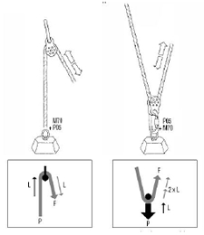
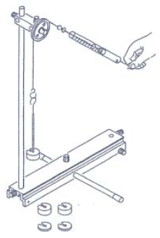

| Objetivo: |
Determinar si este tipo de polea permite ahorrar fuerza.
En los terrenos de obras podemos observar cómo una carga es tirada sobre una polea montada firmemente. ¿Es posible de esta
manera ahorrar fuerza, es decir, tirar con una fuerza menor a la fuerza del peso de la carga?.
|
|
| Introducción: |
Ver Figura 1.
Por definición, cuando una fuerza actúa sobre un cuerpo (F) y lo desplaza una cierta distancia (r) se dice que se realiza un trabajomecánico.
L=F*r
Para jalar material, rescatar un herido o un compañero que ha caído en una grieta se ejerce un trabajo mecánico, ya que
desplazamos un peso (entiéndase peso como una masa bajo la influencia de la gravedad, P=m*g) una cierta distancia.
Las poleas fijas se utilizan para modificar la dirección del movimiento y reducir el rozamiento de la cuerda en los cambios de
sentido. Con este tipo de poleas no se disminuye la fuerza, sólo se desvía. En este caso la distancia que recorre el peso es el mismo
que la distancia de tiro.
F=P
La ventaja de utilizar poleas fija viene del hecho que podemos ayudarnos de nuestro propio peso corporal para ejercer la fuerza de tiro. |
|
|
| Desarrollo Experimental: |
|
Preparación:
Montaje de acuerdo con la Figura 2.
Insertamos una varilla de soporte 25 cm. a través de la perforación transversal del riel de soporte.
Ajustamos la varilla de soporte con ayuda del tornillo moleteado.
Colocamos los capuchones de plástico a ambos extremos de la varilla de soporte.
Fijamos la varilla de soporte 50 cm. normal al riel de soporte y sobre el mismo. Fijamos la nuez a la varilla de soporte normal.
Aseguramos la polea en la nuez con ayuda del bulón de cojinetes.
Atamos gazas a ambos extremos de un cordón de aprox. 30 cm. Llevamos el cordón sobre la polea fija. Sostenemos
verticalmente un dinamómetro (la parte movible hacia arriba) y ajustamos el punto cero en esta posición.
Experimento 1:
Preparamos sucesivamente con los platillos y los pesos de ranura cargas de 60 g, 120g y 180 g.
Suspendemos cada carga del extremo del cordón y la sostenemos con ayuda del dinamómetro, el cual lo suspendemos de la gaza
del otro extremo del cordón.
Trasladamos a la tabla la fuerza de tracción indicada por el dinamómetro.
Tenemos que sostener el dinamómetro inclinado. Así no es posible que se den errores, ya que no hemos ajustado el punto cero para
esta posición. |
| Resultados y Conclusiones: |
|
La fuerza de tracción es tan grande como la carga.
Conclusión: la polea fija no hace posible un ahorro de fuerza. La polea nos sirve para cambiar la dirección de la fuerza por una
dirección que nos sea más cómoda.
|
|
|
| Figura 1: Introducción |
|  |
| |
| Figura 2: Montaje |
|  |
|